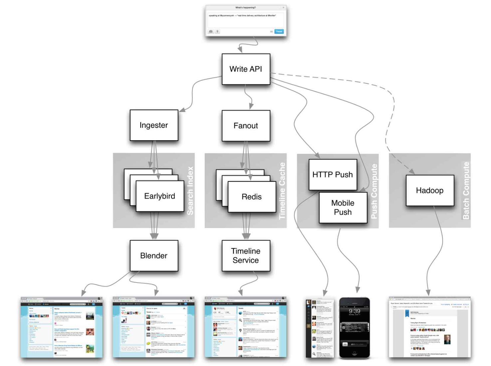

16 Reference
This module isn't meant to be read top to bottom. It's the shelf you pull things off of: more practice prompts, write-ups of how real companies' systems are actually built, and a long list of engineering blogs to skim once you know which companies you're interviewing with.
Looking for the powers-of-two table or the latency numbers every programmer should know? Those moved to Module 02 — Foundations, since you'll want them close at hand from the very start, not buried at the end.Common prompts, each with links to write-ups and talks on how to approach it. Use these once the core 8 system design solutions (Module 14) feel comfortable.
| Question | Reference(s) |
|---|---|
| Design a file sync service like Dropbox | youtube.com |
| Design a search engine like Google | queue.acm.org, stackexchange.com, ardendertat.com, stanford.edu |
| Design a scalable web crawler like Google | quora.com |
| Design Google docs | code.google.com, neil.fraser.name |
| Design a key-value store like Redis | codecapsule.com, allthingsdistributed.com |
| Design a cache system like Memcached | slideshare.net |
| Design a recommendation system like Amazon's | hulu.com, ijcai13.org |
| Design a tinyurl system like Bitly | n00tc0d3r.blogspot.com |
| Design a chat app like WhatsApp | highscalability.com |
| Design a picture sharing system like Instagram | highscalability.com, highscalability.com |
| Design the Facebook news feed function | quora.com, quora.com, slideshare.net |
| Design the Facebook timeline function | facebook.com, highscalability.com |
| Design the Facebook chat function | erlang-factory.com, facebook.com |
| Design a graph search function like Facebook's | facebook.com, facebook.com, facebook.com |
| Design a content delivery network like CloudFlare | figshare.com |
| Design a trending topic system like Twitter's | michael-noll.com, snikolov.wordpress.com |
| Design a random ID generation system | blog.twitter.com, github.com |
| Return the top k requests during a time interval | cs.ucsb.edu, wpi.edu |
| Design a system that serves data from multiple data centers | highscalability.com |
| Design an online multiplayer card game | indieflashblog.com, buildnewgames.com |
| Design a garbage collection system | stuffwithstuff.com, washington.edu |
| Design an API rate limiter | stripe.com/blog |
| Design a Stock Exchange (like NASDAQ or Binance) | Jane Street, Golang implementation, Go implementation |

Articles on how real systems are actually designed. Don't get lost in the nitty-gritty of each one — instead identify shared principles and common technologies, study what problem each component solves and where it falls short, and read for the lessons learned.
| Type | System | Reference |
|---|---|---|
| Data processing | MapReduce — distributed data processing from Google | research.google.com |
| Data processing | Spark — distributed data processing from Databricks | slideshare.net |
| Data processing | Storm — distributed data processing from Twitter | slideshare.net |
| Data store | Bigtable — distributed column-oriented database from Google | harvard.edu |
| Data store | HBase — open source implementation of Bigtable | slideshare.net |
| Data store | Cassandra — distributed column-oriented database from Facebook | slideshare.net |
| Data store | DynamoDB — document-oriented database from Amazon | harvard.edu |
| Data store | MongoDB — document-oriented database | slideshare.net |
| Data store | Spanner — globally-distributed database from Google | research.google.com |
| Data store | Memcached — distributed memory caching system | slideshare.net |
| Data store | Redis — distributed memory caching system with persistence and value types | slideshare.net |
| File system | Google File System (GFS) — distributed file system | research.google.com |
| File system | Hadoop File System (HDFS) — open source implementation of GFS | apache.org |
| Misc | Chubby — lock service for loosely-coupled distributed systems from Google | research.google.com |
| Misc | Dapper — distributed systems tracing infrastructure | research.google.com |
| Misc | Kafka — pub/sub message queue from LinkedIn | slideshare.net |
| Misc | Zookeeper — centralized infrastructure and services enabling synchronization | slideshare.net |
Case studies of how specific companies scaled, mostly via High Scalability write-ups.
Questions you get asked might come straight out of the same domain a company blogs about. Skim the blog of whoever you're interviewing with.